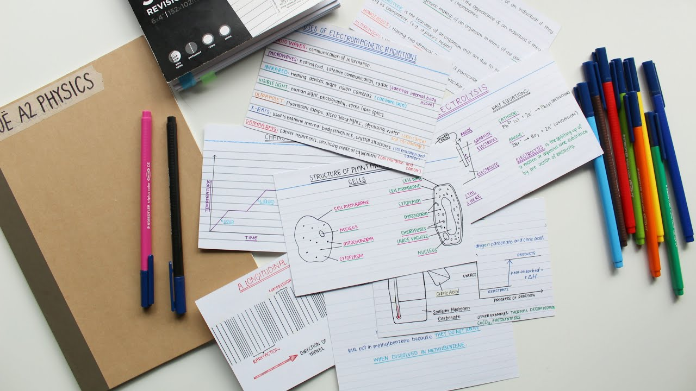

Запоминаем с помощью карточек
Благодаря наглядному методу карточек можно сохранять в долговременной памяти важные даты, факты, формулы, географические названия, иностранные слова и многое другое.
Почему метод карточек работает для запоминания
Карточка — это бумажка или картинка в электронном виде с двумя рабочими сторонами. На одной — то, что нужно запомнить; на другой — пояснение.
Активное запоминание. Работа с карточками, каждый раз как маленький экзамен. Мы видим вопрос, то есть одну сторону с незнакомым понятием, и стараемся самостоятельно найти ответ. Затем открываем обратную сторону и проверяем себя. Это активизирует мозг гораздо лучше, чем обычное чтение или механическая зубрёжка.
Запоминание начинается в момент подготовки. Делая карточки, особенно бумажные, мы уже перерабатываем и усваиваем материал.
Как сделать карточки для запоминания
Карточки могут быть бумажными и электронными.
В первом случае лучше делать их на плотной бумаге, обязательно с цветными вставками и иллюстрациями. Белые бумажки с однообразными чёрными буквами нагоняют тоску — такие карточки не способствуют запоминанию.
Бумажные карточки могут быть целиком хендмейд-производства, а можно сделать их Word или Power Point и распечатать. Электронные карточки для запоминания удобно создавать в Quizlet, The Mnemosyne Project, Anki, Supermemo и других сервисах.
Общие правила составления карточек для запоминания слов, дат, фактов и тому подобного.
- Краткость. Одна карточка — один факт, слово или дата. Не пытайтесь уместить на неё целую главу учебника.
- Ясность. Не злоупотребляйте заумными словами. Пишите пояснения на карточках так, как будет понятно именно вам.
- Наглядность. Используйте схемы, графики, картинки, цветной текст.
- Контекст. Добавляйте на определительную сторону карточки примеры.
Как пользоваться карточками для запоминания
Главное правило в работе с карточками — регулярность. Чтобы почувствовать эффект, к карточкам нужно возвращаться снова и снова.
Составьте график повторений, используя метод Лейтмана. Разделите имеющиеся у вас карточки для запоминания слов, дат и фактов на три группы.
- Те, что вы знаете плохо.
- Те, что вы знаете удовлетворительно.
- Те, что вы знаете хорошо.
Для каждой группы карточек нужна своя коробка. Коробку №1 с незнакомыми карточками нужно просматривать каждый день, коробку №2 — дважды в неделю, коробку №3 — один раз в неделю. Карточки постепенно будут перемещаться между коробками: выучили что-то — переложили в коробку №3, подзабыли — вернули в коробку №2.
Ещё несколько лайфхаков по методу запоминания с помощью карточек.
- Проговаривайте ответы вслух. Так информация запоминается лучше, так как задействуется слуховая память.
- Время от времени устраивайте brainstorm. Вытаскивая наугад карточки из разных коллекций, пытайтесь дать максимальное количество правильных ответов за ограниченный промежуток времени.
- Обменивайтесь карточками с друзьями. Это весело и включает механизм ответственности. Вам захочется поскорее перевести все карточки в третью коробку.
- Комбинируйте с другими методами обучения. Карточки для запоминания — это не волшебная палочка. Не забывайте смотреть занятия, конспектировать и читать книги.
Учитесь везде. Для работы с карточками не нужны какие-то особые условия, их фишка в простоте. Перебирайте карточки в очереди, метро, лифте, за ужином и даже принимая ванную.